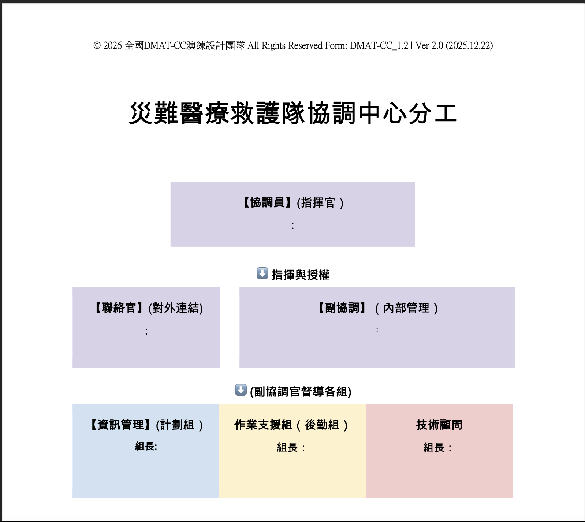
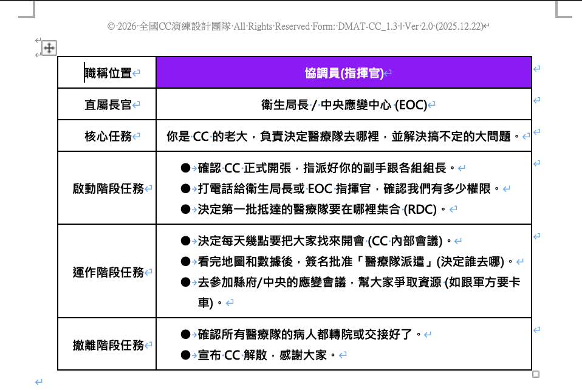

CC 指揮中心與 iDMAT 1.0
雙軌體驗流程
2 小時
雙軌輪替
CC 協調中心與 iDMAT 現場醫療同步進行，中場交換。
64 人
四組操作
A、B、C、D 四組分流，減少等待，增加實作密度。
20250923
光復馬太鞍溪堰塞湖溢流
以溢流事件作為共同情境，串接前線醫療與後方協調任務。
今天你是前線的醫護也是在後台支援前線的協調中心
第一階段：活動總覽與動線說明
破冰與全局觀
體驗核心目標
- 目標一： 練習協調中心（CC）災時醫療需求評估的垂直與橫向分工。
- 目標二： 精準資源調度，依據受災程度派遣適合的急性期「醫療隊」與災區進入慢性期「醫療機構」進駐災點。
備註：控制組將模擬外援隊伍報到，並接受CC協調中心的任務指派。
兩小時雙軌體驗時間軸
Core Timeline
00:00-00:10
哈囉大家好
- 體驗流程說明
- 場地規則
00:10-01:00
前半場
A/B：CC 協調中心
C/D：iDMAT 體驗操作
01:00-01:10
換空間
人員移動交換場地，設備與教具留在原處。
01:10-02:00
後半場
C/D：CC 協調中心
A/B：iDMAT 體驗操作
02:00
體驗結束
- 回收成果
- 重點回饋
- 補充系統操作疑問
雙軌動線與交換機制
A/B/C/D 四組分流
A、B 組
前半場：CC 協調中心
小木屋會議室
前半場：CC 協調中心
小木屋會議室
→
中場換空間
人員動設備不動
人員動設備不動
→
A、B 組
後半場：iDMAT 體驗操作
手工教室
後半場：iDMAT 體驗操作
手工教室
C、D 組
前半場：iDMAT 體驗操作
手工教室
前半場：iDMAT 體驗操作
手工教室
→
共同情境
0923 光復馬太鞍溪堰塞湖溢流事件
0923 光復馬太鞍溪堰塞湖溢流事件
→
C、D 組
後半場：CC 協調中心
小木屋會議室
後半場：CC 協調中心
小木屋會議室
體驗流程角色分工
Role Map
雲林縣衛生醫療聯隊
擔任 CC 協調中心人員及醫療隊，是本次體驗的核心主角。
決策 部署 回報控制組
掌控演練節奏、投放災情資訊，並扮演外援醫療隊伍。
節奏 情境 壓力測試CC 協調中心
- 整合災情
- 判斷需求
- 規劃派遣
醫療隊
- 依任務前往熱區
- 回報現場醫療需求
外援隊伍
由控制組扮演，接受 3-5 分鐘任務簡報。
系統後台
- 登打傷患資料
- 登打處置與後送資料
- 完成每日報表書寫
簡報提醒
控制組模板
依欄位填重點
不需自行製作
第二階段：CC 指揮中心部署體驗
戰略決策 / 0923 光復馬太鞍溪溢流事件
1. 接收情資
災情圖片、文字通報、地圖資訊
建立 災情戰情版
2. 視覺化
比對災點、道路、醫療據點
標出災情熱區
3. 匹配量能
醫療隊人力、後勤、醫院專科與床數與災區交通距離
形成部署方案
4. 任務簡報
整理已知受災情資與派遣任務
完成對外援隊伍 3-5 分鐘交接
任務卡讓分工可執行
先完成分工，再閱讀任務卡
1
完成 CC 分工

2
閱讀任務卡

重點
避免多人同時處理同一件事
CC 體驗狀況題
三大狀況類型，四題即時研判
人力協調
在地志願者管理
公共溝通
輿論處理
環境衛生
環境衛生
公共溝通
民眾觀感
決策第一步：情資視覺化
表格與地圖比對
災情圖片
淹水、受困點、醫療需求
淹水、受困點、醫療需求
→
實體地圖
定位災點、路線、醫療資源距離
定位災點、路線、醫療資源距離
→
災情熱區
形成可討論、可派遣的區域判斷
形成可討論、可派遣的區域判斷
區域
受災情形
醫療需求
優先序
熱區 A
道路阻斷、居民受困
急症評估、慢病用藥
高
熱區 B
淹水退去、通行受限
巡迴醫療、後送評估
中
熱區 C
零星通報、資訊不足
待查證
待定
災區情資怎麼視覺化？
小技巧：先把受災區域表格化

表列重點
受災區域
交通狀況
基礎設施
受傷人數
怎麼判斷醫療隊該去哪裡？

分析重點
受災區域表
人員清冊
後勤量能
決策第二步：災區需求與醫療量能匹配
請在災區地圖上下棋部署
災區
受災情形、醫療需求熱區、道路可近性。
醫療隊量能
醫護人力、後勤資源、可執行任務型態。
醫療機構量能
專科清冊、收治病床數、與災區距離。
需求
→
量能
→
距離
→
派遣任務
任務指派與簡報交付
Briefing Protocol
醫療隊抵達前
- CC 整理已知受災情資。
- 填入公版簡報。
- 確認任務區域、路線與回報方式。
醫療隊抵達後
- 向外援隊伍進行 3-5分鐘 任務簡報。
- 說明災區全貌與優先任務。
- 確認前線掌握資訊後出發。
跟醫療隊簡報最重要的是：目前已知什麼、最需要你們去哪裡、到了之後先做什麼、如何回報，CC跟各醫療隊每天幾點要開會。
第三階段：iDMAT 1.0 資訊系統體驗
模擬執行現場醫療流程
檢傷
Triage
Triage
掃描 QR Code 手圈，建立或讀取傷患資料。
→
治療
Treatment
Treatment
依傷情卡操作處置，完成數位病歷登錄。
→
後送
Transport
Transport
記錄後送目的地與狀態，支援後台統計。
現場提醒：想知道傷患的處置情形，掃一次手圈即可顯示完整歷程。
科技輔助：iDMAT APP 與 QR Code
Digital Workflow
手機 APP
學員以 iDMAT 1.0 APP 執行現場操作。
請確認已於 4/29 前完成下載。
QR Code 手圈
每位傷患有專屬識別。
降低紙本轉錄錯誤。
數位病歷
檢傷、治療、後送歷程可追蹤。
支援後台即時查閱。
大數據中心與每日報表
MDS Data Analysis
後台查閱
- 控制組登入系統後台。
- 引導學員查看剛輸入的即時報表。
- 觀察傷患數、處置狀態與後送分布。
每日報表
- 依後台資料填寫每日災情醫療報表。
- 練習將現場紀錄轉為決策資訊。
- 確認資料缺口與回報需求。
現場輸入
→
後台統計
→
每日報表
→
下一輪決策
進階情境提問
壓力測試
情境一
特定國籍傷患目前在哪裡？是否已完成後送？
情境二
原定後送醫院滿載，現場如何改派？
情境三
熱區新增慢性病用藥需求，CC 如何補派資源？
目的：考驗對系統數據的掌握度，以及高壓下將資訊轉為決策的臨場反應。
結尾：把流程串成一個閉環
From Coordination to Field Feedback
CC 判讀
災情、需求、量能
災情、需求、量能
→
任務派遣
醫療隊與醫療機構部署
醫療隊與醫療機構部署
→
現場回報
iDMAT 登錄與後台報表
iDMAT 登錄與後台報表